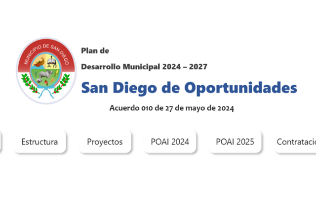
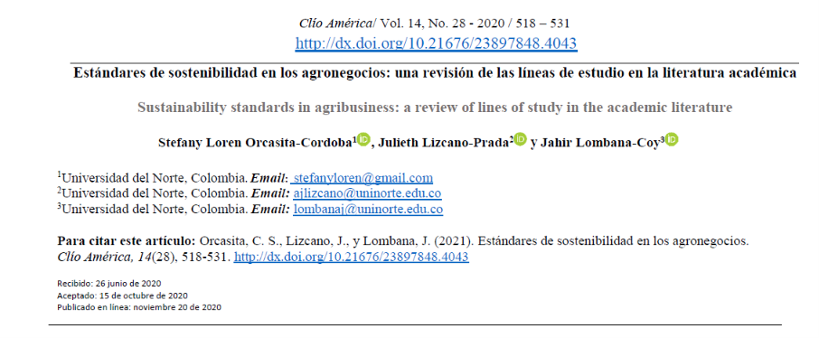
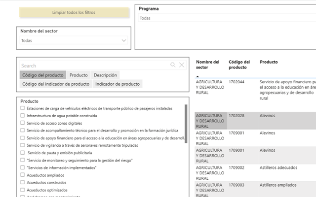

Planeación territorial, presupuesto público y análisis de datos.
Economista con experiencia en planeación y presupuesto de entidades territoriales: formulación y seguimiento de planes de desarrollo, Plan Operativo Anual de Inversiones (POAI) y análisis de datos aplicado a las finanzas públicas, con tableros de control en Power BI, SQL y Excel.
Datos
Power BI, Excel avanzado y SQL. Certificado en Análisis de Datos de Google (2025).
Planeación y presupuesto
Planes de desarrollo, POAI, Marco Fiscal de Mediano Plazo, MGA, SUIFP Territorio, SisPT y PDET.
Formación
Economista, Universidad del Magdalena (2017). Matrícula CONALPE N.º 54184.
Proyectos
-
01 · Planeación territorial
Plan de Desarrollo Municipal de San Diego, Cesar
Formulación del plan (Acuerdo 010 de 2024), con un Plan Plurianual de Inversiones de $129.458 millones y 63 iniciativas PDET integradas.
Ver el documento → -

02 · Análisis de datos
Tablero de seguimiento del plan en Power BI
Seguimiento mensual de las 250 metas, usado por Planeación, Hacienda, Contratación y Proyectos.
Abrir el tablero → -

03 · Investigación
Estándares de sostenibilidad en los agronegocios
Revisión bibliométrica publicada en Clío América (2020), con Julieth Lizcano-Prada y Jahir Lombana-Coy.
Leer el artículo → -

04 · Herramienta
Catálogo interactivo de la MGA
Tablero en Power BI que convierte el catálogo de productos del DNP en una consulta rápida por sector, programa, código, indicador o palabra clave. Lo usan oficinas de planeación de varios municipios.
Abrir el catálogo →